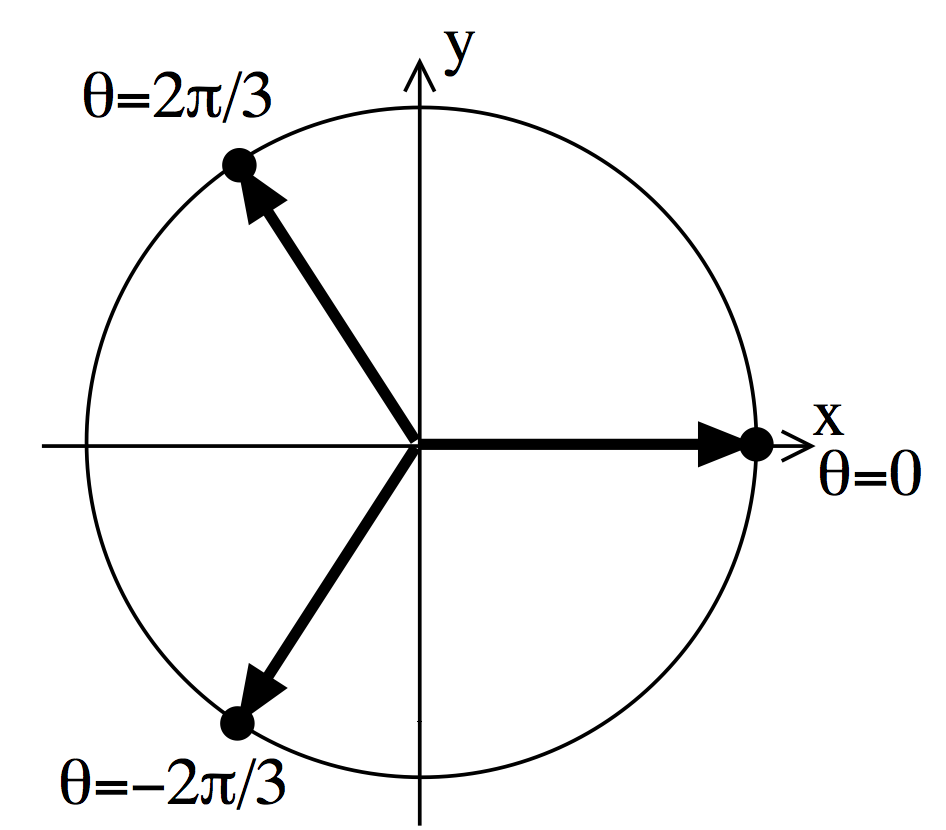

Week 10: Complex numbers
\[ \newenvironment{amatrix}[1]{% \left[\begin{array}{#1} }{% \end{array}\right] } \]
This last bit of the module is a bit disconnected from the rest, and builds on complex numbers that you’ve seen before.
A historical note
It seems like complex numbers are just 2D vectors. Actually, complex numbers were invented first, and vectors afterwards. Also, adding imaginary numbers does a lot more than adding an extra dimension, because it allows us to solve equations like \(z^4=-1\). We’ll see how this week.
I suggest that you don’t imagine complex numbers as 2D vectors. In fact in maths, physics and engineering we regularly see vectors of complex numbers, and when you start thinking about functions and calculus of complex numbers it really breaks down. They’re they’re own thing.
Polar form for complex numbers
Hopefully now you’re used to the idea of complex numbers like \(z=1-2i\). Here \(1\) is the real part and \(-2\) is the imaginary part.
A different way of writing down complex numbers is to measure the angle anticlockwise from the real axis, which we call the argument of the complex number, and also its distance away from \(0\), which we call its modulus.
Suppose \(z=a+ib\) is some complex number. Often we write \(r\) for the modulus \[ r = |z| = \sqrt{a^2+b^2} \] and \(\theta\) for the argument \[ \theta = \arg z = \tan^{-1} \frac{b}{a}. \]
Note that \(|z|\geq0\) and we choose \(\pi<\arg z\leq\pi\).
The formula \(\arg z = \tan^{-1} \frac{b}{a}\) doesn’t work if both \(a<0\). You need to add or subtract \(\pi\) to get the right answer. It’s best to draw a diagram and think carefully.
Complex conjugates
We define the conjugate of a complex number \(z=a+ib\) to be \(\overline{z}=a-ib\). This is the complex number with the same real part but opposite imaginary part, or equivalently with the same modulus but opposite argument.
Note that \[ z\overline{z} = (a+ib)(a-ib) = a^2 + iba + a(-ib) + (ib)(-ib) = a^2 + b^2 = |z|^2. \] This is a bit like how \({\mathbf{a}}\cdot{\mathbf{a}} = |{\mathbf{a}}|^2\) for vectors. But \(z^2 \neq |z|^2\), unless \(z\) is real.
\[ z\overline{z} = |z|^2. \]
Trigonometic form
Looking at Figure 1 and use some simple triognometry, we see that \(a=r\cos\theta\) and \(b=r\sin\theta\). This gives the full trigonometric form for a complex number: \[ z = r\left(\cos\theta+i\sin\theta\right). \]
Example
Write the complex number \(z=-2-2i\) in polar form.
First, draw an Argand diagram. We see that we must have \(-\pi < \arg z < -\pi/2\), because it’s in the lower left quadrant. \(\tan^{-1} \frac{-2}{-2} = \tan^{-1} 1 = \pi/4\), but this doesn’t fit the right range, so we have to subtract \(\pi\) to get \(\arg z = -3\pi/4\).
Even better: just spot that \(\arg z = -3\pi/4\) from the diagram.
Second, \(|z| = \sqrt{(-2)^2+(-2)^2} = \sqrt{8} = 2\sqrt{2}\).
Putting this together, we get the answer: \[ z = 2\sqrt{2}\left(\cos(-3\pi/4) + \sin(-3\pi/4)\right). \]
Usually, once you’ve written it in polar form, it’s easy to work out the cosine and sine and check it matches the original number.
Exponential form
Fact: \[e^{i\theta} = \cos\theta + i\sin\theta. \]
But then we can substitute this straight into the trigonometric formula for complex numbers to give \[ z = re^{i\theta}. \] Again, \(r=|z|\) is the modulus and \(\theta=\arg z\) is the argument.
Demonstration of the fact
The proper mathematical definitions of the exponential function, sine and cosine are through the power series: \[ \exp x = 1 + \frac{x}{1!} + \frac{x^2}{2!} + \frac{x^3}{3!} + \dots \] \[ \cos \theta = 1 - \frac{\theta^2}{2!} + \frac{\theta^4}{4!} + \dots \] \[ \sin \theta = \frac{\theta}{1!} - \frac{\theta^3}{3!} + \frac{\theta^5}{5!} + \dots \] Put \(x=i\theta\) into the first one and you’ll see the result.
De Moivre’s theorem
Using exponential form, we can take powers of a complex number. \[ z^n = \left(re^{i\theta}\right)^n = r^n e^{in\theta}. \] So in trig form, \[ z^n = r^n\left(\cos n\theta+i\sin n\theta\right). \]
This is the main thing to take away from this week.
This is one way to find formulas for \(\sin n\theta\) etc. We don’t even need \(n\) to be an integer.
Example
If \(z=1+i\), what is \(z^5\)?
Of course you could just multiply it by itself 4 times, but that would be very tedious and error-prone.
Instead, we can transform it to polar form and then use de Moivre’s theorem to find the answer.
\(|z| = \sqrt{1^2+1^2} = \sqrt{2}\).
From a sketch or from the formula, \(\arg z = \pi/4\).
So that means \(z = \sqrt{2}\left(\cos\pi/4 + i \sin\pi/4\right)\), and then de Movire tells us \[ z^5 = \sqrt{2}^5 \left(\cos5\pi/4 + i \sin5\pi/4\right) = 4\sqrt{2} \left(-1/\sqrt{2} - i/\sqrt{2}\right) = -4 -4i. \]
To get the values of \(\cos 5\pi/4\) you might find a little sketch of \(\cos x\) helpful, and similarly for \(\sin\).
Complex equations
Now we have all the pieces to solve an equation like \(z^5 = -4 -4i\). (This is just the example from above, but it has more than one solution!)
There’s a general rule you need to know: When \(z\) is a complex number, \(z^n = a\) always has \(n\) solutions (except if \(a=0\)).
For example, \(z^2=1\) has two solutions, \(z=1\) and \(z=-1\). Similarly \(z^2=-1\) gives \(z=i\) and \(z=-i\).
For a quadratic, you can just use the normal quadratic formula, remembering that \(\sqrt{-1}=i\). What about when \(n\neq2\)?
We use de Moivre’s theorem backwards, and remember that we need \(n\) solutions:
For instance, suppose we want to find all \(z\) such that \(z^3=1\). These are called the complex roots of unity.
We can write \(1\) in polar form as \(1 = 1 \left(\cos 0 + i \sin 0\right)\).
But we could also write it as \(1 = 1 \left(\cos 2\pi + i \sin 2\pi\right)\), \(1 = 1 \left(\cos 4\pi + i \sin 4\pi\right)\), etc.
Use de Moivre:
\(z = 1^{1/3} = 1^{1/3} \left(\cos 0 + i \sin 0\right) = 1\)
\(z = 1^{1/3} = 1^{1/3} \left(\cos 2\pi/3 + i \sin 2\pi/3\right) = -\frac{1}{2} + \frac{\sqrt{3}}{2} i\).
\(z = 1^{1/3} = 1^{1/3} \left(\cos 4\pi/3 + i \sin 4\pi/3\right) = -\frac{1}{2} - \frac{\sqrt{3}}{2} i\).
With \(6\pi\) we just get back to where we started, so there are three solutions.
The solutions always evenly divide the unit circle: 
Example
Find all the solutions to the complex equation \(z^4 = 16i\).
First we find the modulus and argument of the right-hand side.
In this case it’s purely imaginary, so it’s easy (think graphically):
\(\arg (16i) = \pi/2\), and \(|16i| = 16\).
We look for solutions in modulus-argument form. If \(z=r\left(\cos \theta + i\sin\theta\right)\) then we know
\[ z^4=r^4 \left(\cos 4\theta + i\sin4\theta\right) \] but also \[ z^4=16 \left(\cos \pi/2 + i\sin\pi/2\right) \]
Since \(r\geq0\) is a real number, we can only have \(r=2\) to give \(r^4=16\).
The key point is to find different \(\theta\) for the different solutions, so that \[ \cos 4\theta=\cos \pi/2 = 0\] and \[ \sin4\theta =\sin\pi/2 = 1\].
The trick is remembering that we can always add \(2\pi\) and not change the values of sine and cosine:
\(4\theta = \pi/2\) gives \(\theta=\pi/8\).
\(4\theta+2\pi = \pi/2\) gives \(\theta=-3\pi/8\).
\(4\theta+4\pi = \pi/2\) gives \(\theta=-7\pi/8\).
\(4\theta+6\pi = \pi/2\) gives \(\theta=-11\pi/8\).
\(4\theta+8\pi = \pi/2\) gives \(\theta=-15\pi/8\) BUT this is the same angle as \(\theta=\pi/8\), so we’ve already found all the solutions.
Now we can write down all the possible answers:
\(z = 2 \left(\cos\pi/8 + i\sin\pi/8\right)\)
\(z = 2 \left(\cos-3\pi/8 + i\sin-3\pi/8\right)\)
\(z = 2 \left(\cos-7\pi/8 + i\sin-7\pi/8\right)\)
\(z = 2 \left(\cos-11\pi/8 + i\sin-11\pi/8\right)\)
If these were simpler expressions, or if you have a calculator, you could now expand these out to the usual form \(z=a+ib\).